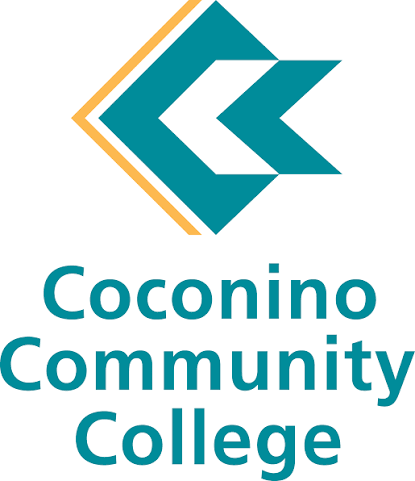
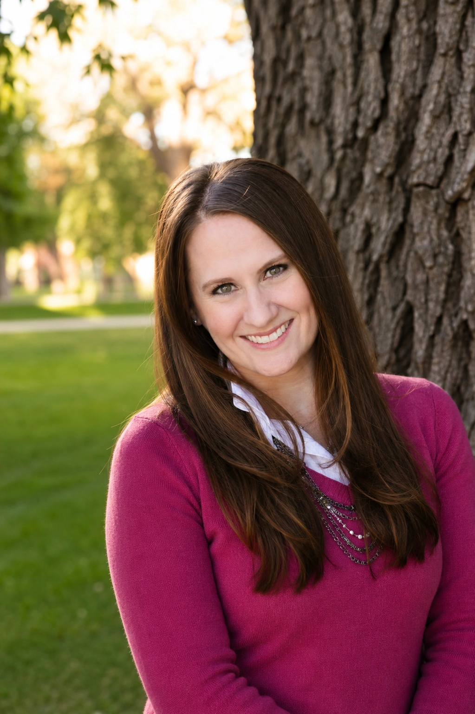
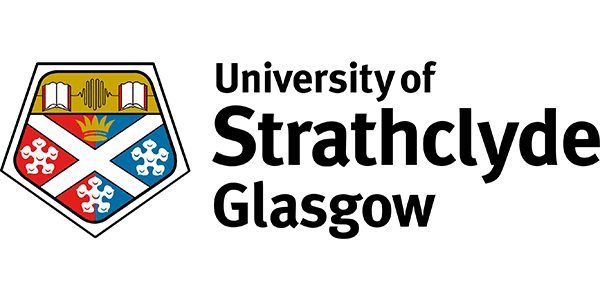
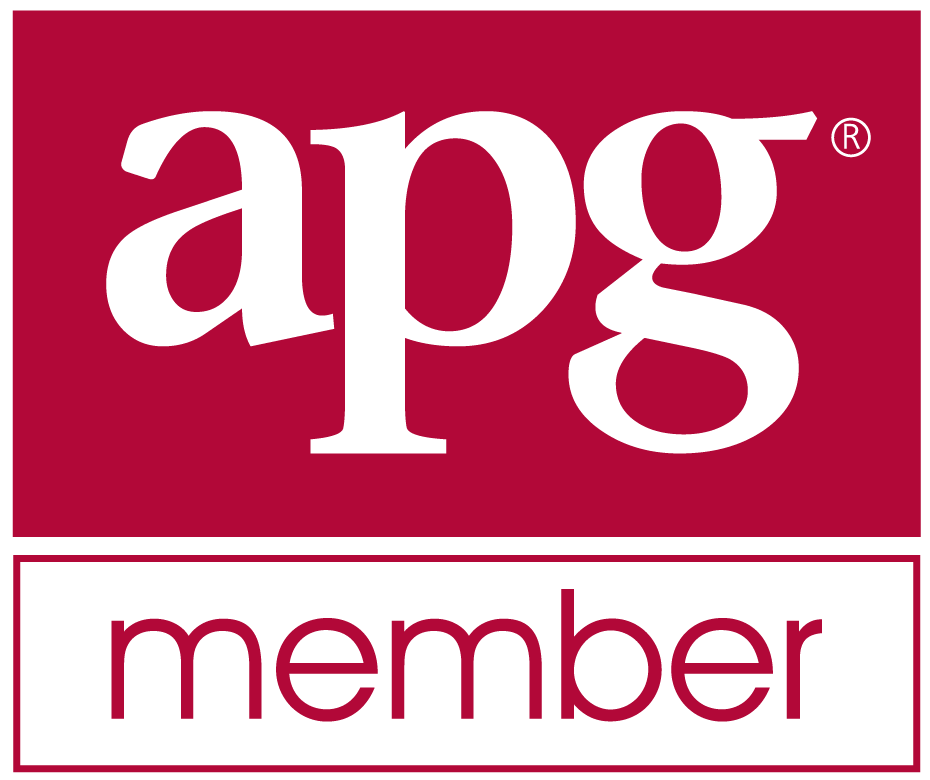

2019
Associate of Arts in PsychologyCoconino Community College

Genealogical & Historical Research

More than twenty-five years ago, I set out to answer a simple question: Where did my family come from?
I was not raised with pedigree charts or family stories. I grew up in a military family, moving often and living far from extended family.
As I grew older, I wanted to understand where I came from. My parents could tell me only so much, and many of the answers I was searching for simply weren’t known. That realization set me on a journey to uncover my own family history, beginning with my German paternal roots. What began as a search to understand my own family’s story soon became a lifelong passion for helping others discover theirs.
Every record uncovered, every photograph identified, and every letter deciphered adds another piece to a family’s story. I love the process of discovery—following clues, weighing evidence, and watching seemingly unrelated records come together into a coherent picture of the past.
As my research expanded, so did my family. I reconnected with relatives on my father’s side—some whom I had met only briefly over the years, and many others through letters, email, and eventually Facebook. Those conversations transformed names on a pedigree chart into real people, building relationships that might otherwise never have existed.
Genealogy is often described as solving puzzles, and in many ways it is. Some puzzles are completed; others always retain missing pieces. Every family has brick walls, and no ethical genealogist can promise to solve them all. What careful research can provide is a deeper understanding of the people who came before us—their lives, their choices, their communities, and the world they lived in.
My goal is to produce research that is thorough, well documented, and clearly explained, giving you not only reliable answers, but a richer understanding of your family’s history for generations to come.



Association of
Professional Genealogists
Register of
Qualified Genealogists